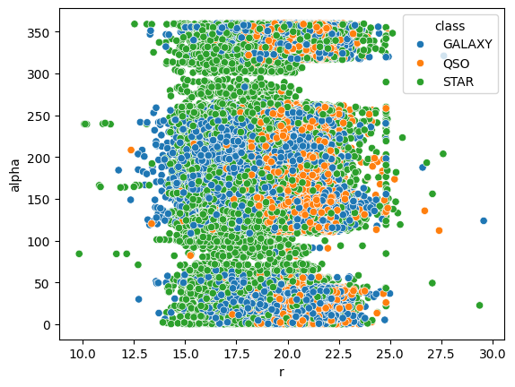
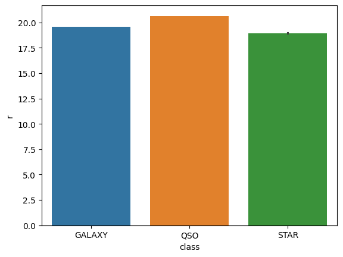
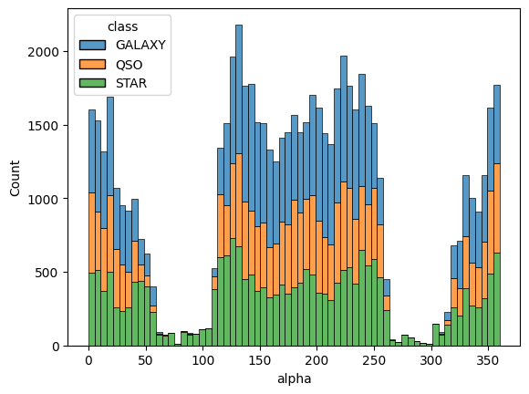
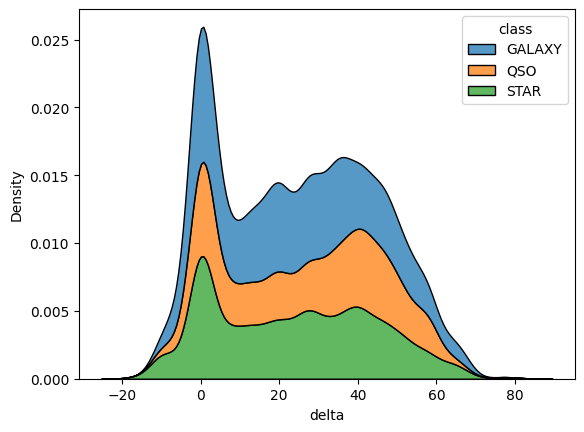
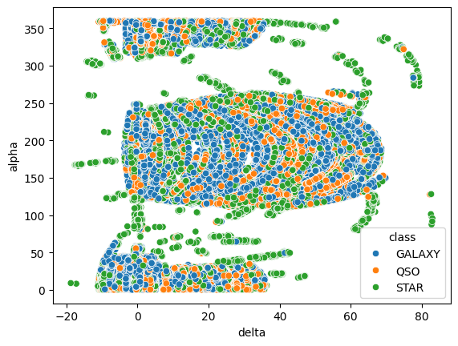
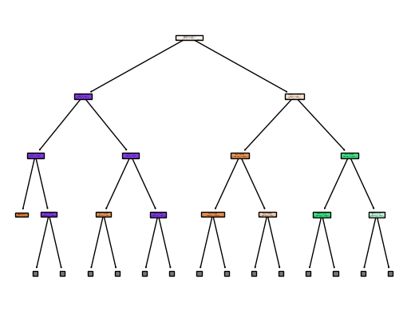
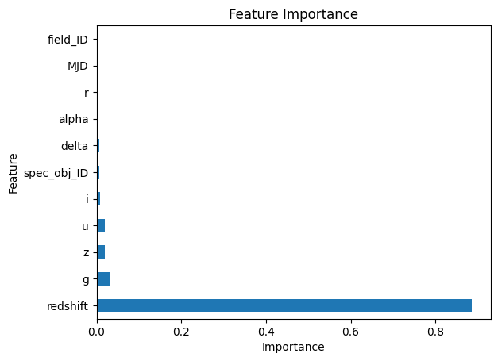
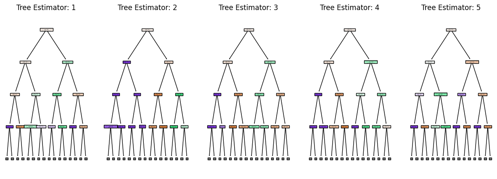
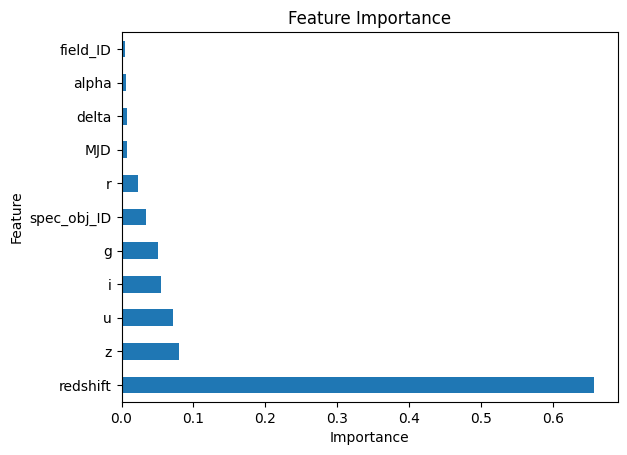
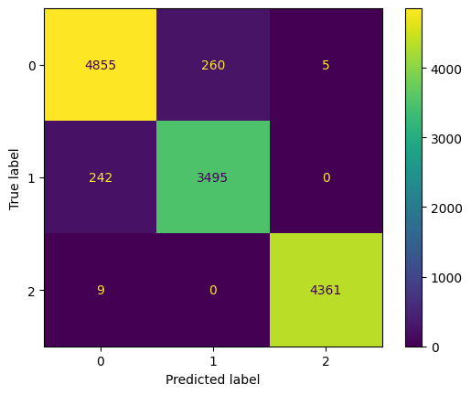

Stellar Object Classification
Zane Hutchens - February 25 , 2024The Problem
With so much new data coming in everyday from telescopes and observatories, big data and data science is beginning to play a key role in astronomy and astrophysics. Machine learning and data analytics can be used to exponentially increase the rate at which new data can be analyzed, without having to complete any manual calculations. Additionally, machine learning can be used to predict properties, classify stellar objects, predict locations, and much more. With this dataset I would like to predict the classification of each stellar object using multiple classification techniques such as Naive Bayes, Decision Tree, and Random Forest. Finally, the main question I have is how the characteristics of stellar objects can be used to identify the object.
Dataset
The dataset I'm using contains 100,000 observations taken from space by the Sloan Digital Sky Survey group, and contains 17 features. The features include red filter wavelength value, infrared filters, ultraviolet filters, declination and ascension angles, and the object class. In this dataset, there are three classes: Galaxy, Star, and Quasars. The data is publicly available on Kaggle and can be found here: https://www.kaggle.com/datasets/fedesoriano/stellar-classification-dataset-sdss17
Preprocessing
As for the preprocessing stage, the dataset was very clean to begin with, but there were a few steps I followed to make sure it was ready for visualization and modeling. First, I checked for null values to eliminate any potential errors. Secondly, I ended up dropping a lot of columns from the dataset since they were not very important to my models, and almost of all of them were ID associated and did not have anything to do with the actual characterisitcs of the object. Finally, the actual dataset was very skewed towards galaxies, so I removed about 2/3 of galaxy observations to balance the data further.
Data Visualizations
The first visualization I have is a scatter plot of red filter and alpha values. In this case, alpha refers to the ascension angle of the stellar object and 'r' refers to its red filter value. In this case, we see much of the data is in the middle, but some outliers exist where they have a very large red shift value and a low alpha value, and a very low alpha value and low red shift value.
For the second visualization, I made a very simple bar plot to visualize the difference between red filter values in the classes. We can see that quasars have the highest value at 20, then galaxies, and finally stars.
In this graph, I have created a stacked histogram plot counting the values of alpha between the three classes. We can see that galaxies tend to have the highest ascension angle, then quasars, and finally stars.
Additionally, I created a kernel density estimate plot to visualize the distribution and differences in the delta value, or declination angle. Similar to the ascension plot, galaxies have the highest declination angles, then quasars, and finally stars.
The last plot I have is another scatter plot, this time comparing delta and alpha values, or declination angles to ascension angles. The data points almost seem to curve, and most are centered in the middle. However, there are two groups of outliers with low delta and alpha values, or low delta values and high alpha values. Additionally, there are some points with high delta and alpha values, which seem to almost exclusively star objects.
Modeling
I used two models to test the differences of each and see which ones performed the best, these include decision trees and random forests.
Decision Tree Model
Because of its interpretability and ease of explanation, I chose to use decision trees for my first model. It is a supervised learning technique that attempts to answer questions based on the current data. The end result is a tree structure with a root node and series of nodes, where each node represents another decision. Additionally, decision trees are not sensitive to the size of the data and do not need a lot of preprocessing done to work well. With my testing, my decision tree usually ended up with around a 96% accuracy on the test datasets. Its precision, recall, and f1 scores were also quite at, in the ranges 93% - 100%. Finally, I have a few visualizations for the decision tree:
Decision Tree Visual
Feature Importance
Random Forest Model
Since the random forest model is essentially combining multiple decision trees. Similar to decision trees, its very easy to interpret and explain while also being powerful in its capabilites. It is also a supervised learning technique and uses the same mechanisms as decision trees. It can be computationally intensive to run, especially as the number of trees increase. Additionally, it is usually only preferred for larger datasets. Finally, the mean accuracy score for my random forest tended to be around 97% on the test datasets. Additonally, the precision, recall, and f1 scores ranged from 94 to 100%.
Random Forest Visual
Feature Importance
Evaluation
My models both performed well, the mean accuracy for decision trees being 96% and random forest being 97%. I also cross validated these scores to make sure they were good, and got the same numbers back. Additionally, I used the precision metric on both models to test its accuracy on true positives, or classification predictions that were correct. I also used the recall score on both to test how many classes the model correctly predicted. Finally, the f1-score was used to create a mean between the recall and precision. For both of the models, decision tree and random forest, the mean accuracy, precision, recall, and f1 score was in a range of 93 to 100%. They both performed very well, but I was expecting there to be a larger gap between the decision tree and random forest scores, given that random forest is essentially a collection of decision trees. I also added the confusion matrix visualizations for my models below:
Decision Tree Confusion Matrix
Random Forest Confusion Matrix
Storytelling
With modeling and metrics, I was able to answer my initial question of how the characterisitcs of stellar objects can be used to identify them. However, the scale of how important some features were to others surprised me. In both decision tree and random forest, the redshift feature is far more important than the others. Additionally. it seems that most of the characteristics involving some form of a filter, such as green or ultraviolet are more important than ID fields, alpha, and delta values. The model performed extremely well was correct on most of its predictions, and even its evaluation metrics were good. However, with modeling and metrics complete I do wonder why the redshift value is so much more important than the others.
Impact
I believe this project could advance the understanding of how machine learning and big data analytics could be utilized in astrophysics and astronmy. This could include trying to predict stellar locations, properties, or even the specific type of stellar object, such as gas planet or red giant stars. Additionally, it's plausible that this is used to branch into other areas of astrophysics, such as space travel, cosmology, and exoplanets. Finally, the models did very well with the dataset and accurately predicted most of the classes, showing that machine learning can be useful and an incredible tool for analysis in this area.
References
fedesoriano, (n.d.) Stellar Classification Dataset - SDSS17. Kaggle. https://www.kaggle.com/datasets/fedesoriano/stellar-classification-dataset-sdss17
Github
The jupyter notebook for my code can be found here. Within the notebook there are two additional models I was playing around with, k-Nearest Neighbors and Naive Bayes. However since the results were not as strong for these models, I decided not to include them in this report.